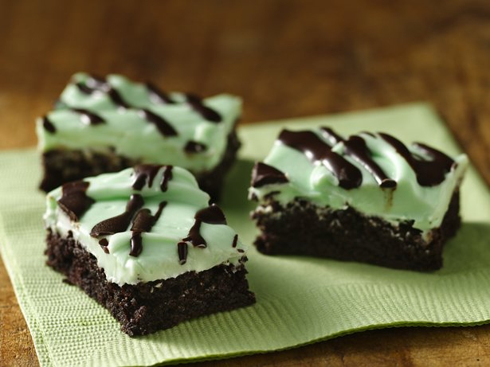

Gluten Free Easy Grasshopper Bars

Chocolate drizzle and cool minty cream cheese frosting top indulgent chocolate bars. Mmm!
Ingredients
Bars
- 1 box Betty Crocker® Gluten Free devil's food cake mix
- 1/3 cup vegetable oil
- 2 tablespoons water
- 1 egg
Frosting
- 1 container Betty Crocker® Rich & Creamy cream cheese frosting
- 1/4 teaspoon mint extract
- 3 to 4 drops green food coloring
Glaze
- 1 oz unsweetened baking chocolate
- 1 tablespoon butter
Steps
- Heat oven to 350°F. Place paper baking cup in each of 24 regular-size muffin cups. In large bowl, beat cake mixes, butter, water, vanilla and eggs with electric mixer on low speed 30 seconds, then on medium speed 2 minutes, scraping bowl occasionally. Divide batter evenly among muffin cups, filling each three-fourths full.
- Bake 20 to 25 minutes or until toothpick inserted in center comes out clean. Cool 5 minutes; remove from pan to cooling rack. Cool completely, about 30 minutes.
- In large bowl, beat whipping cream with electric mixer on high speed until stiff. Add mascarpone cheese, 3 tablespoons liqueur, cold brewed coffee and the powdered sugar; beat just until well blended and thick enough to pipe or spread (do not overbeat).
- In shallow bowl, place 1/4 cup liqueur. Dip tops of each cooled cupcake into liqueur. Top with whipped cream mixture. Sprinkle with cocoa and chocolate shavings. Store loosely covered in refrigerator.